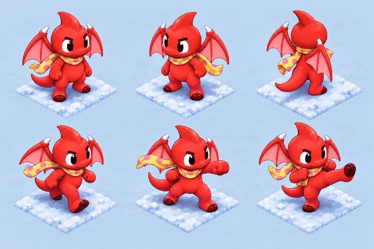

Darren's Snowday Search
Pick a game. Saves, sound and controller buttons are shared between them.
Pixel adventure
The storybook isometric game: rescue Ruffy, then the firewood chapter.
3D adventure
Third-person snowfields with Darren, Tormund and Bucky.
Keys 1 and 2 or a controller (left/right, then A) also pick a game. Back here any time with Ctrl+H; F11 for full screen.